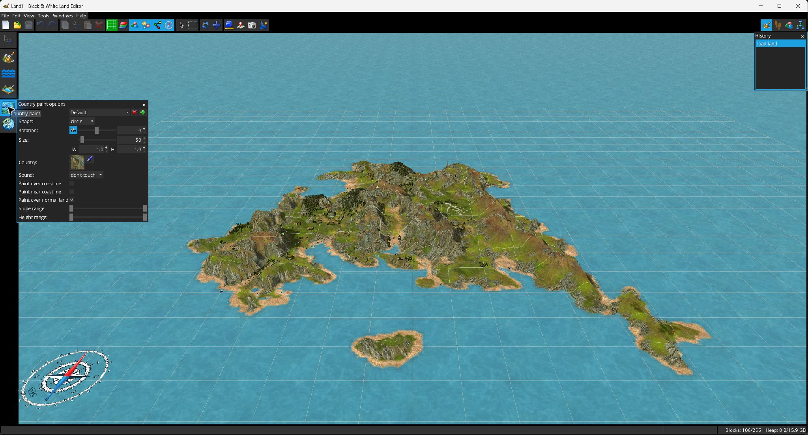

Regionen malen ändert den Regionsindex von Zellen, ohne ihre Höhe zu verändern.

Regionspinsel unterstützen gespeicherte Voreinstellungen, Kreis-/Dreiecksform, Größe, B/H-Verhältnis und Winkel-/Kameradrehung. Wählen Sie die Zielregion direkt aus oder nehmen Sie sie von der Karte auf.
Es werden nur Zellen bemalt, die alle aktivierten Bedingungen erfüllen:
Optional kann zusammen mit der Region ein Umgebungsgeräusch geschrieben werden. Dies ist nützlich, wenn ein Biomwechsel auch die Klangkulisse ändern soll.